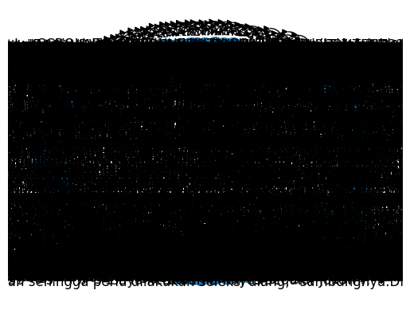

Tugas 3 Graph#
import requests as req
from bs4 import BeautifulSoup as bs
from datetime import datetime
import csv
hades = {'user-agent': 'Mozilla/5.0 (Windows NT 10.0; Win64; x64) AppleWebKit/537.36 (KHTML, like Gecko) Chrome/106.0.0.0 Safari/537.36'}
def scrape_detik(hal):
global hades
a = 1
for page in range(1,hal):
url = f'https://www.detik.com/search/searchnews?query=pemilu+2024&sortby=time&page={page}'
ge = req.get(url,hades).text
sop = bs(ge,'lxml')
li = sop.find('div',class_='list media_rows list-berita')
lin = li.find_all('article')
for x in lin:
link = x.find('a')['href']
date = x.find('a').find('span',class_='date').text.replace('WIB','').replace('detikNews','').split(',')[1]
headline = x.find('a').find('h2').text
ge_ = req.get(link,hades).text
sop_ = bs(ge_,'lxml')
content = sop_.find_all('div',class_='detail__body-text itp_bodycontent')
for x in content:
x = x.find_all('p')
y = [y.text for y in x ]
content_ = ''.join(y).replace('\n', '').replace('ADVERTISEMENT','').replace('SCROLL TO RESUME CONTENT','')
print(f'done[{a}] > {headline[0:10]}')
a += 1
with open('databeritaonline.csv','a')as file:
wr = csv.writer(file, delimiter=',')
wr.writerow([headline,date,link,content_])
scrape_detik(5)
done[1] > Dandim Kot
done[2] > Tepis Nara
done[3] > Ganjar-Mah
done[4] > Ini yang D
done[5] > Mahfud Seb
done[6] > PDIP Jatim
done[7] > TNI-Polri
done[8] > Gibran Sal
done[9] > Danny Gamb
done[10] > Rapat Bare
done[11] > Ganjar Sin
done[12] > Polri Gela
done[13] > PKB Jamin
---------------------------------------------------------------------------
KeyboardInterrupt Traceback (most recent call last)
<ipython-input-3-fc982c15b942> in <cell line: 1>()
----> 1 scrape_detik(5)
<ipython-input-2-20492037ea31> in scrape_detik(hal)
12 date = x.find('a').find('span',class_='date').text.replace('WIB','').replace('detikNews','').split(',')[1]
13 headline = x.find('a').find('h2').text
---> 14 ge_ = req.get(link,hades).text
15 sop_ = bs(ge_,'lxml')
16 content = sop_.find_all('div',class_='detail__body-text itp_bodycontent')
/usr/local/lib/python3.10/dist-packages/requests/api.py in get(url, params, **kwargs)
71 """
72
---> 73 return request("get", url, params=params, **kwargs)
74
75
/usr/local/lib/python3.10/dist-packages/requests/api.py in request(method, url, **kwargs)
57 # cases, and look like a memory leak in others.
58 with sessions.Session() as session:
---> 59 return session.request(method=method, url=url, **kwargs)
60
61
/usr/local/lib/python3.10/dist-packages/requests/sessions.py in request(self, method, url, params, data, headers, cookies, files, auth, timeout, allow_redirects, proxies, hooks, stream, verify, cert, json)
587 }
588 send_kwargs.update(settings)
--> 589 resp = self.send(prep, **send_kwargs)
590
591 return resp
/usr/local/lib/python3.10/dist-packages/requests/sessions.py in send(self, request, **kwargs)
701
702 # Send the request
--> 703 r = adapter.send(request, **kwargs)
704
705 # Total elapsed time of the request (approximately)
/usr/local/lib/python3.10/dist-packages/requests/adapters.py in send(self, request, stream, timeout, verify, cert, proxies)
484
485 try:
--> 486 resp = conn.urlopen(
487 method=request.method,
488 url=url,
/usr/local/lib/python3.10/dist-packages/urllib3/connectionpool.py in urlopen(self, method, url, body, headers, retries, redirect, assert_same_host, timeout, pool_timeout, release_conn, chunked, body_pos, preload_content, decode_content, **response_kw)
789
790 # Make the request on the HTTPConnection object
--> 791 response = self._make_request(
792 conn,
793 method,
/usr/local/lib/python3.10/dist-packages/urllib3/connectionpool.py in _make_request(self, conn, method, url, body, headers, retries, timeout, chunked, response_conn, preload_content, decode_content, enforce_content_length)
466 # Trigger any extra validation we need to do.
467 try:
--> 468 self._validate_conn(conn)
469 except (SocketTimeout, BaseSSLError) as e:
470 self._raise_timeout(err=e, url=url, timeout_value=conn.timeout)
/usr/local/lib/python3.10/dist-packages/urllib3/connectionpool.py in _validate_conn(self, conn)
1095 # Force connect early to allow us to validate the connection.
1096 if conn.is_closed:
-> 1097 conn.connect()
1098
1099 if not conn.is_verified:
/usr/local/lib/python3.10/dist-packages/urllib3/connection.py in connect(self)
640 )
641
--> 642 sock_and_verified = _ssl_wrap_socket_and_match_hostname(
643 sock=sock,
644 cert_reqs=self.cert_reqs,
/usr/local/lib/python3.10/dist-packages/urllib3/connection.py in _ssl_wrap_socket_and_match_hostname(sock, cert_reqs, ssl_version, ssl_minimum_version, ssl_maximum_version, cert_file, key_file, key_password, ca_certs, ca_cert_dir, ca_cert_data, assert_hostname, assert_fingerprint, server_hostname, ssl_context, tls_in_tls)
781 server_hostname = normalized
782
--> 783 ssl_sock = ssl_wrap_socket(
784 sock=sock,
785 keyfile=key_file,
/usr/local/lib/python3.10/dist-packages/urllib3/util/ssl_.py in ssl_wrap_socket(sock, keyfile, certfile, cert_reqs, ca_certs, server_hostname, ssl_version, ciphers, ssl_context, ca_cert_dir, key_password, ca_cert_data, tls_in_tls)
469 pass
470
--> 471 ssl_sock = _ssl_wrap_socket_impl(sock, context, tls_in_tls, server_hostname)
472 return ssl_sock
473
/usr/local/lib/python3.10/dist-packages/urllib3/util/ssl_.py in _ssl_wrap_socket_impl(sock, ssl_context, tls_in_tls, server_hostname)
513 return SSLTransport(sock, ssl_context, server_hostname)
514
--> 515 return ssl_context.wrap_socket(sock, server_hostname=server_hostname)
/usr/lib/python3.10/ssl.py in wrap_socket(self, sock, server_side, do_handshake_on_connect, suppress_ragged_eofs, server_hostname, session)
511 # SSLSocket class handles server_hostname encoding before it calls
512 # ctx._wrap_socket()
--> 513 return self.sslsocket_class._create(
514 sock=sock,
515 server_side=server_side,
/usr/lib/python3.10/ssl.py in _create(cls, sock, server_side, do_handshake_on_connect, suppress_ragged_eofs, server_hostname, context, session)
1069 # non-blocking
1070 raise ValueError("do_handshake_on_connect should not be specified for non-blocking sockets")
-> 1071 self.do_handshake()
1072 except (OSError, ValueError):
1073 self.close()
/usr/lib/python3.10/ssl.py in do_handshake(self, block)
1340 if timeout == 0.0 and block:
1341 self.settimeout(None)
-> 1342 self._sslobj.do_handshake()
1343 finally:
1344 self.settimeout(timeout)
KeyboardInterrupt:
import pandas as pd
df = pd.read_csv('/content/databeritaonline.csv')
df
| Kapolda Jatim Imam Sugianto Siap Amankan Piala Dunia U-17 dan Pilpres 2024 | 30 Okt 2023 19:33 | https://www.detik.com/jatim/berita/d-7010507/kapolda-jatim-imam-sugianto-siap-amankan-piala-dunia-u-17-dan-pilpres-2024 | Irjen Imam Sugianto resmi menjabat sebagai Kapolda Jatim. Kehadirannya di Jatim menggantikan Irjen Pol (Purn) Tony Harmanto yang telah memasuki masa paripurna.Usai mengikuti serah terima jabatan (sertijab) hari ini, Imam mengaku akan melanjutkan tugas Kapolda Jatim sebelumnya. Di antaranya persiapan pengamanan Piala Dunia U-17 dan Pilpres 2024."Agenda yang menunggu 2, Piala Dunia U-17 dan Operasi Mantap Brata untuk Pam Pilpres yang berlangsung sekitar 220 hari sampai Oktober 2024," kata Imam saat ditemui awak media di depan Gedung Mahameru Polda Jatim, Senin (30/10/2023).\r\r\rSCROLL TO CONTINUE WITH CONTENT\rImam memastikan persiapan pengamanan Piala Dunia U-17 telah disusun rapi hasil koordinasi Polda Jatim dengan Mabes Polri dan PSSI. Terutama karena Kota Pahlawan akan menjadi lokasi pembukaan Piala Dunia U-17."Untuk agenda 10 hari ke depan itu event Piala Dunia U-17 yang Insyaallah dipusatkan di Surabaya, ya, pembukaannya," katanya.Dia berharap masyarakat Jatim, khususnya warga Surabaya, turut menjaga keamanan agar situasi tetap kondusif. Supaya para pemain dan WNA yang akan menonton pertandingan kelak menjadi nyaman, aman, dan betah berlama-lama di Kota Pahlawan."Saya mohon dan berharap dukungannya masyarakat, yuk kita sukseskan kegiatan event internasional ini supaya Surabaya aman, nyaman, didatangi siapapun mereka senang di sini," tuturnya. | |
|---|---|---|---|---|
| 0 | Ini Tokoh Terkenal Jatim yang Didambakan Demok... | 30 Okt 2023 19:22 | https://www.detik.com/jatim/berita/d-7010505/i... | Salah satu tokoh terkenal di Jawa Timur dikaba... |
| 1 | Relawan 'Pagi' Resmikan Posko, Pede Prabowo-Gi... | 30 Okt 2023 19:16 | https://news.detik.com/pemilu/d-7010487/relawa... | Relawan Laskar Prabowo-Gibran (Pagi) meresmika... |
| 2 | Andre Rosiade Apresiasi Makan Siang Jokowi dan... | 30 Okt 2023 19:13 | https://news.detik.com/pemilu/d-7010484/andre-... | Presiden Joko Widodo (Jokowi) makan siang bers... |
| 3 | Kata Gibran soal Disebut Hasto Tinggalkan PDIP... | 30 Okt 2023 19:00 | https://www.detik.com/sumbagsel/berita/d-70099... | Sekretaris Jenderal (Sekjen) PDIP Hasto Kristi... |
| 4 | PDIP Apresiasi Pertemuan Jokowi dan 3 Capres: ... | 30 Okt 2023 18:46 | https://news.detik.com/pemilu/d-7010416/pdip-a... | PDI Perjuangan mengapresiasi pertemuan Preside... |
| 5 | Saut Ikut Cak Imin ke Malang: Saya Hadir untuk... | 30 Okt 2023 18:43 | https://news.detik.com/pemilu/d-7010409/saut-i... | Mantan Wakil Ketua KPK Saut Situmorang hadir d... |
| 6 | Ketua KPU Lantik Anggota KPU Kabupaten/Kota di... | 30 Okt 2023 18:27 | https://news.detik.com/pemilu/d-7010361/ketua-... | Ketua KPU Hasyim Asy'ari resmi melantik anggot... |
| 7 | Gerindra Bogor Targetkan 70% Suara untuk Prabo... | 30 Okt 2023 18:23 | https://news.detik.com/pemilu/d-7010353/gerind... | Partai Gerindra Kabupaten Bogor menargetkan 70... |
| 8 | IKA Universitas Negeri Makassar Bakal Undang 3... | 30 Okt 2023 17:40 | https://www.detik.com/sulsel/berita/d-7010042/... | Ikatan Kekeluargaan Alumni (IKA) Universitas N... |
| 9 | Erick Thohir Sebut dari 11 Proyek Janji Presid... | 30 Okt 2023 17:37 | https://finance.detik.com/infrastruktur/d-7010... | Erick Thohir memimpin Rapat Koordinasi sebagai... |
| 10 | Stafsus Ungkap Jokowi Dengarkan Harapan Anies,... | 30 Okt 2023 17:24 | https://news.detik.com/pemilu/d-7010228/stafsu... | Presiden Joko Widodo (Jokowi) makan siang bers... |
| 11 | Jokowi Bertemu 3 Capres, Cak Imin: Kesimpulann... | 30 Okt 2023 17:21 | https://news.detik.com/pemilu/d-7010221/jokowi... | Ketua Umum PKB Muhaimin Iskandar atau Cak Imin... |
| 12 | Gantikan Luhut, Erick Sampaikan Pesan Penting ... | 30 Okt 2023 17:03 | https://finance.detik.com/berita-ekonomi-bisni... | Menteri Koordinator Bidang Kemaritiman dan Inv... |
| 13 | Kabar Cawapres Bertemu Ma'ruf Besok, Cak Imin ... | 30 Okt 2023 17:03 | https://news.detik.com/pemilu/d-7010147/kabar-... | Bakal calon wakil presiden (bacawapres) Koalis... |
| 14 | Saat Jokowi Minta Pj Kepala Daerah Tak Tepuk T... | 30 Okt 2023 16:41 | https://news.detik.com/pemilu/d-7010059/saat-j... | Momen menarik terjadi saat Presiden Joko Widod... |
| 15 | Seberapa Pemilu Kamu? Tes Pengetahuan Kamu Ten... | 30 Okt 2023 16:39 | https://news.detik.com/pemilu/d-7010057/sebera... | Pemilu semakin mendekat, salah satu buktinya a... |
| 16 | Kapolda Jatim Imam Sugianto Siap Amankan Piala... | 30 Okt 2023 19:33 | https://www.detik.com/jatim/berita/d-7010507/k... | Irjen Imam Sugianto resmi menjabat sebagai Kap... |
| 17 | Ini Tokoh Terkenal Jatim yang Didambakan Demok... | 30 Okt 2023 19:22 | https://www.detik.com/jatim/berita/d-7010505/i... | Salah satu tokoh terkenal di Jawa Timur dikaba... |
| 18 | Relawan 'Pagi' Resmikan Posko, Pede Prabowo-Gi... | 30 Okt 2023 19:16 | https://news.detik.com/pemilu/d-7010487/relawa... | Relawan Laskar Prabowo-Gibran (Pagi) meresmika... |
| 19 | Kapolda Jatim Imam Sugianto Siap Amankan Piala... | 30 Okt 2023 19:33 | https://www.detik.com/jatim/berita/d-7010507/k... | Irjen Imam Sugianto resmi menjabat sebagai Kap... |
| 20 | Ini Tokoh Terkenal Jatim yang Didambakan Demok... | 30 Okt 2023 19:22 | https://www.detik.com/jatim/berita/d-7010505/i... | Salah satu tokoh terkenal di Jawa Timur dikaba... |
| 21 | Relawan 'Pagi' Resmikan Posko, Pede Prabowo-Gi... | 30 Okt 2023 19:16 | https://news.detik.com/pemilu/d-7010487/relawa... | Relawan Laskar Prabowo-Gibran (Pagi) meresmika... |
| 22 | Andre Rosiade Apresiasi Makan Siang Jokowi dan... | 30 Okt 2023 19:13 | https://news.detik.com/pemilu/d-7010484/andre-... | Presiden Joko Widodo (Jokowi) makan siang bers... |
| 23 | Kata Gibran soal Disebut Hasto Tinggalkan PDIP... | 30 Okt 2023 19:00 | https://www.detik.com/sumbagsel/berita/d-70099... | Sekretaris Jenderal (Sekjen) PDIP Hasto Kristi... |
| 24 | PDIP Apresiasi Pertemuan Jokowi dan 3 Capres: ... | 30 Okt 2023 18:46 | https://news.detik.com/pemilu/d-7010416/pdip-a... | PDI Perjuangan mengapresiasi pertemuan Preside... |
| 25 | Saut Ikut Cak Imin ke Malang: Saya Hadir untuk... | 30 Okt 2023 18:43 | https://news.detik.com/pemilu/d-7010409/saut-i... | Mantan Wakil Ketua KPK Saut Situmorang hadir d... |
| 26 | Ketua KPU Lantik Anggota KPU Kabupaten/Kota di... | 30 Okt 2023 18:27 | https://news.detik.com/pemilu/d-7010361/ketua-... | Ketua KPU Hasyim Asy'ari resmi melantik anggot... |
| 27 | Gerindra Bogor Targetkan 70% Suara untuk Prabo... | 30 Okt 2023 18:23 | https://news.detik.com/pemilu/d-7010353/gerind... | Partai Gerindra Kabupaten Bogor menargetkan 70... |
| 28 | IKA Universitas Negeri Makassar Bakal Undang 3... | 30 Okt 2023 17:40 | https://www.detik.com/sulsel/berita/d-7010042/... | Ikatan Kekeluargaan Alumni (IKA) Universitas N... |
| 29 | Erick Thohir Sebut dari 11 Proyek Janji Presid... | 30 Okt 2023 17:37 | https://finance.detik.com/infrastruktur/d-7010... | Erick Thohir memimpin Rapat Koordinasi sebagai... |
| 30 | Stafsus Ungkap Jokowi Dengarkan Harapan Anies,... | 30 Okt 2023 17:24 | https://news.detik.com/pemilu/d-7010228/stafsu... | Presiden Joko Widodo (Jokowi) makan siang bers... |
| 31 | Jokowi Bertemu 3 Capres, Cak Imin: Kesimpulann... | 30 Okt 2023 17:21 | https://news.detik.com/pemilu/d-7010221/jokowi... | Ketua Umum PKB Muhaimin Iskandar atau Cak Imin... |
| 32 | Gantikan Luhut, Erick Sampaikan Pesan Penting ... | 30 Okt 2023 17:03 | https://finance.detik.com/berita-ekonomi-bisni... | Menteri Koordinator Bidang Kemaritiman dan Inv... |
| 33 | Kabar Cawapres Bertemu Ma'ruf Besok, Cak Imin ... | 30 Okt 2023 17:03 | https://news.detik.com/pemilu/d-7010147/kabar-... | Bakal calon wakil presiden (bacawapres) Koalis... |
| 34 | Saat Jokowi Minta Pj Kepala Daerah Tak Tepuk T... | 30 Okt 2023 16:41 | https://news.detik.com/pemilu/d-7010059/saat-j... | Momen menarik terjadi saat Presiden Joko Widod... |
| 35 | Seberapa Pemilu Kamu? Tes Pengetahuan Kamu Ten... | 30 Okt 2023 16:39 | https://news.detik.com/pemilu/d-7010057/sebera... | Pemilu semakin mendekat, salah satu buktinya a... |
| 36 | Deklarasi Pemilu Damai, Bupati Jember: Mari Ja... | 30 Okt 2023 16:32 | https://www.detik.com/jatim/berita/d-7010028/d... | TNI bersama Pemkab Jember menggelar Deklarasi ... |
| 37 | Seleksi Komisioner KPU di 4 Daerah Jabar Diulang | 30 Okt 2023 16:30 | https://www.detik.com/jabar/berita/d-7009284/s... | Sebanyak empat daerah di Jawa Barat terpaksa h... |
| 38 | Gibran Secepatnya Bicarakan KTA PDIP dengan FX... | 30 Okt 2023 16:15 | https://news.detik.com/pemilu/d-7009994/gibran... | Wali Kota Solo Gibran Rakabuming Raka akan men... |
| 39 | Makan Siang di Istana, Anies Pakai Batik yang ... | 30 Okt 2023 16:14 | https://news.detik.com/berita/d-7009990/makan-... | Ada pemandangan menarik dalam makan siang Pres... |
| 40 | PSI Nilai Jokowi Bertemu 3 Capres untuk Minima... | 30 Okt 2023 16:10 | https://news.detik.com/pemilu/d-7009979/psi-ni... | Partai Solidaritas Indonesia (PSI) mengapresia... |
| 41 | Gus Sadad: Ketua Parpol Jatim Representasi Nah... | 30 Okt 2023 16:06 | https://www.detik.com/jatim/berita/d-7009972/g... | Ketua DPD Gerindra Jawa Timur Anwar Sadad buka... |
| 42 | Viral Pimpin Rapat Pemenangan Gibran, Wamendes... | 30 Okt 2023 16:05 | https://news.detik.com/pemilu/d-7009969/viral-... | Beredar video Wamendes-PDTT Paiman Raharjo din... |
| 43 | Gibran Bilang Secepatnya Akan Ketemu FX Rudy B... | 30 Okt 2023 15:58 | https://www.detik.com/jateng/berita/d-7009955/... | Wali Kota Solo Gibran Rakabuming Raka akan men... |
| 44 | Anies Percaya Jokowi Akan Netral di Pilpres 2024 | 30 Okt 2023 15:42 | https://news.detik.com/pemilu/d-7009914/anies-... | Bakal calon presiden (capres) dari Koalisi Per... |
| 45 | Jelang Pemilu, Jokowi ke Kepala Daerah: Pastik... | 30 Okt 2023 15:40 | https://finance.detik.com/berita-ekonomi-bisni... | Presiden Joko Widodo (Jokowi) memberikan wanti... |
| 46 | Kiai-Santri Depok Gelar Istigasah, Doakan Keme... | 30 Okt 2023 15:37 | https://news.detik.com/pemilu/d-7009906/kiai-s... | Sejumlah santri dan kiai di Kota Depok menggel... |
| 47 | Djarot: Saya Gagal Beberapa Hal, Termasuk Pemb... | 30 Okt 2023 15:26 | https://news.detik.com/pemilu/d-7009887/djarot... | Ketua DPP PDIP Djarot Saiful Hidayat mengaku m... |
| 48 | Respons Hasto soal Isu Kartu Truf, Nusron: Kam... | 30 Okt 2023 15:23 | https://news.detik.com/pemilu/d-7009875/respon... | Politisi Partai Golkar Nusron Wahid merespons ... |
| 49 | Ganjar: Pak Prabowo Makan Lontong, Pak Anies N... | 30 Okt 2023 15:17 | https://news.detik.com/pemilu/d-7009863/ganjar... | Calon presiden (capres) Ganjar Pranowo mengung... |
| 50 | Sekda Enrekang Dilantik Jadi Pj Bupati Besok, ... | 30 Okt 2023 15:14 | https://www.detik.com/sulsel/berita/d-7009861/... | Sekretaris Daerah (Sekda) Enrekang H Baba akan... |
| 51 | Pernyataan Lengkap Sultan Jogja soal Pak Lurah... | 30 Okt 2023 15:06 | https://www.detik.com/jogja/berita/d-7009834/p... | Gubernur DIY Sri Sultan Hamengku Buwono X memb... |
| 52 | Prabowo Ungkap Harapan Jokowi ke Para Capres S... | 30 Okt 2023 15:03 | https://news.detik.com/pemilu/d-7009825/prabow... | Calon presiden (capres) Koalisi Indonesia Maju... |
| 53 | Cerita Prabowo soal Suasana saat Makan Bareng ... | 30 Okt 2023 14:47 | https://news.detik.com/pemilu/d-7009796/cerita... | Bajkl calon presiden (capres) Koalisi Indonesi... |
import csv
import nltk
from nltk.tokenize import sent_tokenize
nltk.download('punkt')
# Fungsi untuk ekstraksi kalimat dari teks
def extract_sentences(text):
sentences = sent_tokenize(text)
return sentences
# Baca file CSV dengan data berita
with open('databeritaonline.csv', 'r') as file:
reader = csv.reader(file, delimiter=',')
next(reader) # Skip header row
for row in reader:
headline, date, link, content = row
# Ekstraksi kalimat dari konten berita
sentences = extract_sentences(content)
# Tulis kalimat-kalimat ke file CSV baru
with open('kalimat_berita.csv', 'a') as output_file:
writer = csv.writer(output_file, delimiter=',')
for sentence in sentences:
writer.writerow([headline, date, link, sentence])
[nltk_data] Downloading package punkt to /root/nltk_data...
[nltk_data] Unzipping tokenizers/punkt.zip.
df = pd.read_csv('/content/kalimat_berita.csv')
df
| Ini Tokoh Terkenal Jatim yang Didambakan Demokrat Dukung Prabowo-Gibran | 30 Okt 2023 19:22 | https://www.detik.com/jatim/berita/d-7010505/ini-tokoh-terkenal-jatim-yang-didambakan-demokrat-dukung-prabowo-gibran | Salah satu tokoh terkenal di Jawa Timur dikabarkan segera bergabung dalam Tim Kampanye Nasional (TKN) Prabowo Subianto-Gibran Rakabuming Raka. | |
|---|---|---|---|---|
| 0 | Ini Tokoh Terkenal Jatim yang Didambakan Demok... | 30 Okt 2023 19:22 | https://www.detik.com/jatim/berita/d-7010505/i... | Kepala BPOKK DPD Demokrat Jatim Mugianto menye... |
| 1 | Ini Tokoh Terkenal Jatim yang Didambakan Demok... | 30 Okt 2023 19:22 | https://www.detik.com/jatim/berita/d-7010505/i... | "Harapan kami dan Insyaallah jadi kenyataan ya... |
| 2 | Ini Tokoh Terkenal Jatim yang Didambakan Demok... | 30 Okt 2023 19:22 | https://www.detik.com/jatim/berita/d-7010505/i... | Apalagi, Khofifah juga menjabat sebagai Gubern... |
| 3 | Ini Tokoh Terkenal Jatim yang Didambakan Demok... | 30 Okt 2023 19:22 | https://www.detik.com/jatim/berita/d-7010505/i... | SCROLL TO CONTINUE WITH CONTENT\n"Bu Khofifah ... |
| 4 | Ini Tokoh Terkenal Jatim yang Didambakan Demok... | 30 Okt 2023 19:22 | https://www.detik.com/jatim/berita/d-7010505/i... | Beliau sangat pantas jika masuk tim pemenangan... |
| ... | ... | ... | ... | ... |
| 781 | Cerita Prabowo soal Suasana saat Makan Bareng ... | 30 Okt 2023 14:47 | https://news.detik.com/pemilu/d-7009796/cerita... | Menteri Pertahanan itu mengatakan menu makan s... |
| 782 | Cerita Prabowo soal Suasana saat Makan Bareng ... | 30 Okt 2023 14:47 | https://news.detik.com/pemilu/d-7009796/cerita... | "Baru saja diundang makan oleh Bapak Presiden ... |
| 783 | Cerita Prabowo soal Suasana saat Makan Bareng ... | 30 Okt 2023 14:47 | https://news.detik.com/pemilu/d-7009796/cerita... | "Saya makan banyak sih," timpal Ganjar. |
| 784 | Cerita Prabowo soal Suasana saat Makan Bareng ... | 30 Okt 2023 14:47 | https://news.detik.com/pemilu/d-7009796/cerita... | "Ada soto tadi, lontong, cumi-cumi, sayur. |
| 785 | Cerita Prabowo soal Suasana saat Makan Bareng ... | 30 Okt 2023 14:47 | https://news.detik.com/pemilu/d-7009796/cerita... | Lumayan, jadi bagus," pungkas Prabowo.Simak Vi... |
786 rows × 4 columns
import csv
from sklearn.feature_extraction.text import TfidfVectorizer
# Baca file CSV dengan kalimat-kalimat berita
sentences = []
with open('kalimat_berita.csv', 'r') as file:
reader = csv.reader(file, delimiter=',')
for row in reader:
sentence = row[-1] # Ambil kalimat dari kolom terakhir
sentences.append(sentence)
# Inisialisasi TF-IDF Vectorizer
tfidf_vectorizer = TfidfVectorizer()
# Hitung TF-IDF dari kalimat-kalimat
tfidf_matrix = tfidf_vectorizer.fit_transform(sentences)
# Dapatkan daftar fitur (kata-kata) dari TF-IDF
features = tfidf_vectorizer.get_feature_names_out()
# Simpan hasil TF-IDF ke dalam file CSV
with open('tfidf_berita.csv', 'w') as output_file:
writer = csv.writer(output_file, delimiter=',')
writer.writerow(['Sentence'] + features) # Header dengan nama fitur
for i, sentence in enumerate(sentences):
tfidf_values = tfidf_matrix[i].toarray().flatten()
writer.writerow([sentence] + list(tfidf_values))
df = pd.read_csv('/content/tfidf_berita.csv')
df
| Sentence000 | Sentence01 | Sentence05 | Sentence0824 | Sentence09 | Sentence10 | Sentence100 | Sentence11 | Sentence12 | Sentence14 | ... | Sentencewujudkan | Sentenceya | Sentenceyaitu | Sentenceyakin | Sentenceyakni | Sentenceyang | Sentenceyel | Sentenceyogyakarta | Sentenceyuk | Sentencezaman | |
|---|---|---|---|---|---|---|---|---|---|---|---|---|---|---|---|---|---|---|---|---|---|
| Salah satu tokoh terkenal di Jawa Timur dikabarkan segera bergabung dalam Tim Kampanye Nasional (TKN) Prabowo Subianto-Gibran Rakabuming Raka. | 0.0 | 0.0 | 0.0 | 0.0 | 0.0 | 0.000000 | 0.0 | 0.0 | 0.0 | 0.0 | ... | 0.0 | 0.000000 | 0.0 | 0.0 | 0.0 | 0.000000 | 0.0 | 0.0 | 0.0 | 0.0 |
| Kepala BPOKK DPD Demokrat Jatim Mugianto menyebut tokoh terkenal yang didambakan gabung adalah Khofifah Indar Parawansa. | 0.0 | 0.0 | 0.0 | 0.0 | 0.0 | 0.000000 | 0.0 | 0.0 | 0.0 | 0.0 | ... | 0.0 | 0.000000 | 0.0 | 0.0 | 0.0 | 0.104318 | 0.0 | 0.0 | 0.0 | 0.0 |
| "Harapan kami dan Insyaallah jadi kenyataan ya Bu Khofifah," kata Mugianto saat dikonfirmasi detikJatim, Senin (30/10/2023).Mugianto menyebut Khofifah adalah salah satu tokoh paling terkenal dan berpengaruh di Jatim saat ini. | 0.0 | 0.0 | 0.0 | 0.0 | 0.0 | 0.117394 | 0.0 | 0.0 | 0.0 | 0.0 | ... | 0.0 | 0.145479 | 0.0 | 0.0 | 0.0 | 0.000000 | 0.0 | 0.0 | 0.0 | 0.0 |
| Apalagi, Khofifah juga menjabat sebagai Gubernur Jatim. | 0.0 | 0.0 | 0.0 | 0.0 | 0.0 | 0.000000 | 0.0 | 0.0 | 0.0 | 0.0 | ... | 0.0 | 0.000000 | 0.0 | 0.0 | 0.0 | 0.000000 | 0.0 | 0.0 | 0.0 | 0.0 |
| SCROLL TO CONTINUE WITH CONTENT\n"Bu Khofifah tokoh paling berpengaruh di Jatim saat ini, beliau gubernur, beliau Ketua Umum PP Muslimat NU. | 0.0 | 0.0 | 0.0 | 0.0 | 0.0 | 0.000000 | 0.0 | 0.0 | 0.0 | 0.0 | ... | 0.0 | 0.000000 | 0.0 | 0.0 | 0.0 | 0.000000 | 0.0 | 0.0 | 0.0 | 0.0 |
| ... | ... | ... | ... | ... | ... | ... | ... | ... | ... | ... | ... | ... | ... | ... | ... | ... | ... | ... | ... | ... | ... |
| Menteri Pertahanan itu mengatakan menu makan siang yang dihidangkan ada soto, lontong, hingga cumi-cumi. | 0.0 | 0.0 | 0.0 | 0.0 | 0.0 | 0.000000 | 0.0 | 0.0 | 0.0 | 0.0 | ... | 0.0 | 0.000000 | 0.0 | 0.0 | 0.0 | 0.098470 | 0.0 | 0.0 | 0.0 | 0.0 |
| "Baru saja diundang makan oleh Bapak Presiden dan lumayan tadi ya makannya," kata Prabowo. | 0.0 | 0.0 | 0.0 | 0.0 | 0.0 | 0.000000 | 0.0 | 0.0 | 0.0 | 0.0 | ... | 0.0 | 0.236453 | 0.0 | 0.0 | 0.0 | 0.000000 | 0.0 | 0.0 | 0.0 | 0.0 |
| "Saya makan banyak sih," timpal Ganjar. | 0.0 | 0.0 | 0.0 | 0.0 | 0.0 | 0.000000 | 0.0 | 0.0 | 0.0 | 0.0 | ... | 0.0 | 0.000000 | 0.0 | 0.0 | 0.0 | 0.000000 | 0.0 | 0.0 | 0.0 | 0.0 |
| "Ada soto tadi, lontong, cumi-cumi, sayur. | 0.0 | 0.0 | 0.0 | 0.0 | 0.0 | 0.000000 | 0.0 | 0.0 | 0.0 | 0.0 | ... | 0.0 | 0.000000 | 0.0 | 0.0 | 0.0 | 0.000000 | 0.0 | 0.0 | 0.0 | 0.0 |
| Lumayan, jadi bagus," pungkas Prabowo.Simak Video 'Momen Jokowi Makan Siang Bareng Anies-Ganjar-Prabowo di Istana': [Gambas:Video 20detik] | 0.0 | 0.0 | 0.0 | 0.0 | 0.0 | 0.000000 | 0.0 | 0.0 | 0.0 | 0.0 | ... | 0.0 | 0.000000 | 0.0 | 0.0 | 0.0 | 0.000000 | 0.0 | 0.0 | 0.0 | 0.0 |
787 rows × 2352 columns
import csv
from sklearn.metrics.pairwise import cosine_similarity
# Baca file CSV dengan matriks TF-IDF kalimat-kalimat
tfidf_matrix = []
with open('tfidf_berita.csv', 'r') as file:
reader = csv.reader(file, delimiter=',')
header = next(reader) # Simpan header
for row in reader:
tfidf_values = list(map(float, row[1:])) # Ambil nilai TF-IDF
tfidf_matrix.append(tfidf_values)
# Hitung similaritas kosinus antara kalimat-kalimat
cosine_similarities = cosine_similarity(tfidf_matrix, tfidf_matrix)
# Simpan hasil similaritas kosinus ke dalam file CSV
with open('cosine_similarities.csv', 'w') as output_file:
writer = csv.writer(output_file, delimiter=',')
writer.writerow(['Sentence 1', 'Sentence 2', 'Cosine Similarity']) # Header
for i, sentence1 in enumerate(sentences):
for j, sentence2 in enumerate(sentences):
similarity = cosine_similarities[i][j]
writer.writerow([sentence1, sentence2, similarity])
df = pd.read_csv('/content/cosine_similarities.csv')
df
| Sentence 1 | Sentence 2 | Cosine Similarity | |
|---|---|---|---|
| 0 | Salah satu tokoh terkenal di Jawa Timur dikaba... | Salah satu tokoh terkenal di Jawa Timur dikaba... | 1.000000 |
| 1 | Salah satu tokoh terkenal di Jawa Timur dikaba... | Kepala BPOKK DPD Demokrat Jatim Mugianto menye... | 0.108382 |
| 2 | Salah satu tokoh terkenal di Jawa Timur dikaba... | "Harapan kami dan Insyaallah jadi kenyataan ya... | 0.146714 |
| 3 | Salah satu tokoh terkenal di Jawa Timur dikaba... | Apalagi, Khofifah juga menjabat sebagai Gubern... | 0.000000 |
| 4 | Salah satu tokoh terkenal di Jawa Timur dikaba... | SCROLL TO CONTINUE WITH CONTENT\n"Bu Khofifah ... | 0.053189 |
| ... | ... | ... | ... |
| 619364 | Lumayan, jadi bagus," pungkas Prabowo.Simak Vi... | Menteri Pertahanan itu mengatakan menu makan s... | 0.056544 |
| 619365 | Lumayan, jadi bagus," pungkas Prabowo.Simak Vi... | "Baru saja diundang makan oleh Bapak Presiden ... | 0.200856 |
| 619366 | Lumayan, jadi bagus," pungkas Prabowo.Simak Vi... | "Saya makan banyak sih," timpal Ganjar. | 0.102893 |
| 619367 | Lumayan, jadi bagus," pungkas Prabowo.Simak Vi... | "Ada soto tadi, lontong, cumi-cumi, sayur. | 0.000000 |
| 619368 | Lumayan, jadi bagus," pungkas Prabowo.Simak Vi... | Lumayan, jadi bagus," pungkas Prabowo.Simak Vi... | 1.000000 |
619369 rows × 3 columns
import csv
import networkx as nx
import matplotlib.pyplot as plt
# Baca file CSV dengan similaritas kosinus
G = nx.DiGraph()
with open('cosine_similarities.csv', 'r') as file:
reader = csv.reader(file, delimiter=',')
next(reader) # Skip header
for row in reader:
sentence1, sentence2, similarity = row
similarity = float(similarity)
if similarity > 0.6: # Ubah ambang sesuai dengan kebutuhan Anda
G.add_edge(sentence1, sentence2, weight=similarity)
# Gambar graf
pos = nx.spring_layout(G) # Anda bisa menggunakan layout yang berbeda
labels = {node: node for node in G.nodes()}
edge_labels = {(node1, node2): f"{G[node1][node2]['weight']:.2f}" for node1, node2 in G.edges()}
nx.draw_networkx_nodes(G, pos, node_size=200)
nx.draw_networkx_labels(G, pos, labels)
nx.draw_networkx_edges(G, pos)
nx.draw_networkx_edge_labels(G, pos, edge_labels=edge_labels, font_color='red')
plt.axis('off')
plt.show()

import networkx as nx
import pandas as pd
# Hitung closeness centrality
closeness_centrality = nx.closeness_centrality(G)
# Konversi ke DataFrame
df = pd.DataFrame(list(closeness_centrality.items()), columns=['Node', 'Closeness Centrality'])
# Cetak DataFrame
print(df)
Node Closeness Centrality
0 Salah satu tokoh terkenal di Jawa Timur dikaba... 0.000000
1 Kepala BPOKK DPD Demokrat Jatim Mugianto menye... 0.000000
2 "Harapan kami dan Insyaallah jadi kenyataan ya... 0.000000
3 Apalagi, Khofifah juga menjabat sebagai Gubern... 0.000000
4 SCROLL TO CONTINUE WITH CONTENT\n"Bu Khofifah ... 0.000000
.. ... ...
522 Tadi itu saya kira demikian ya," ujarnya.Prabo... 0.000000
523 Menteri Pertahanan itu mengatakan menu makan s... 0.001901
524 "Ada soto tadi, lontong, cumi-cumi, sayur. 0.001901
525 "Baru saja diundang makan oleh Bapak Presiden ... 0.000000
526 "Saya makan banyak sih," timpal Ganjar. 0.000000
[527 rows x 2 columns]